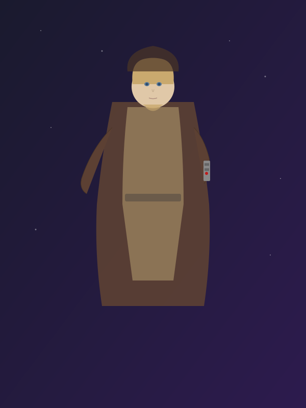

A digital portrait of Obi-Wan Kenobi, the legendary Jedi Master. Rendered in a stylized approach that emphasizes the character's wisdom and quiet strength, with his iconic blue lightsaber casting a soft glow across the starfield background.
The earth-toned Jedi robes ground the character in warmth and humility, while the ethereal blue lightsaber glow creates a striking focal point that draws the eye upward through the composition. The subtle star field behind him suggests the vast galaxy he has protected.
This fan art piece explores how simplified shapes and a limited color palette can capture the essence of a beloved character, distilling complex visual information into its most recognizable elements.